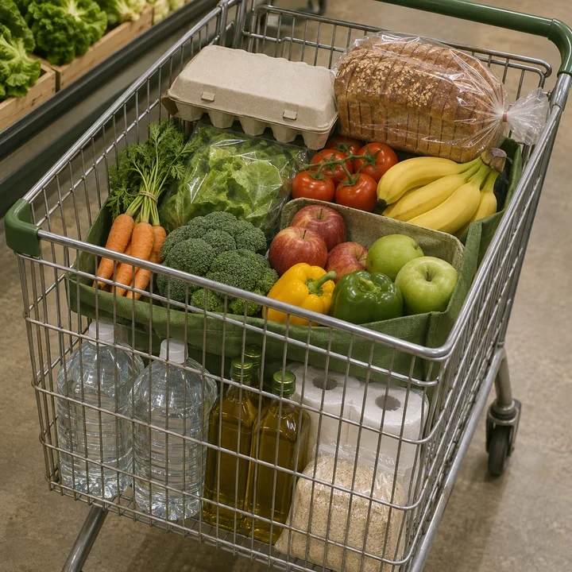

Cómo colocar la compra en el carrito
Un orden sencillo para proteger los huevos, el pan y los alimentos delicados.

Lo pesado abajo y lo delicado encima
Pon las botellas, las latas y los envases resistentes en el fondo. Reserva un espacio para el pan, los huevos y la fruta madura para evitar que se aplasten.
Deja los productos fríos para el final
Recoge los refrigerados y congelados al final. Separa la carne o el pescado crudos del resto y utiliza una bolsa térmica para llevar la compra a casa, sobre todo si hace calor.